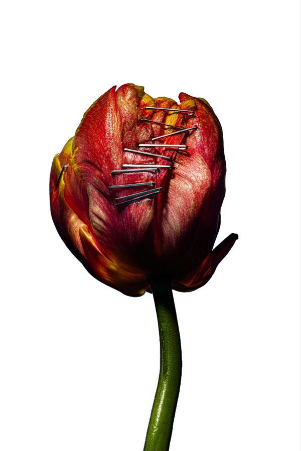

mepa que me mandé una cagada comprando un pantalón en shein
CH 01 · frase
de mi cuerpo descompuesto crecerán las flores, y yo estaré en ellas. eso es eternidad.
— edvard munch

‖ PAUSA foto de la semana CH 01 · 00:03:33sos el visitante nº000001
escuchando ahora
● SINTONIZANDO…
Kettering
The Antlers
último pensamiento
01.10 · 19:02
mepa que me mandé una cagada comprando un pantalón en shein
ver todos ▸shuffle · autorretrato
#047
Reckoner
Radiohead
ahora mismo
- mirando
- monstruos: la historia de lizzie borden
- jugando
- red dead redemption
- obsesionado con
- una wacha de la otra comisión
■ STOP · FIN DE LA CINTA
◀◀ REBOBINAR
CH 02
fotos
Ropa, objetos, lugares y cosas que me gustan.
El orden cambia cada vez que entrás. Tocá una foto para verla grande.
CH 03
pensamientos
Cosas que me pasan, en el momento en que me pasan.
conchadelalora 4am y sigo haciendo la página con claude
CH 04
lecturas
Textos largos, para leer con calma.
■ FIN · volver a cuentos
Todavía no hay historias.Pronto.
CH 05
favoritos
Un top irregular. Cada lista tiene el largo que tiene que tener.
canciones TOP 10
álbumes TOP 5
películas TOP 6
series TOP 7
juegos TOP 6
CH 06
libro de visitas
Dejá tu firma. El nombre es obligatorio.
0 FIRMAS
Nadie firmó todavía. La primera firma va a quedar acá.
Versión de prueba: las firmas se ven pero todavía no se guardan. Cuando la página esté en internet, quedan guardadas y nadie puede borrarlas ni editarlas.